Коротко
Это рисерч, на котором построен прототип фрагмента первой сессии сервиса знакомств: 5 экранов анкеты после блока «о себе» и экран, предлагающий купить подписку. Цель задания: CR от первого экрана фрагмента до экрана подписки выше 90%, при этом ответы должны помогать второй стороне решить, подходит ли ей человек.
Что получилось.
- Флоу «Обмен», 5 экранов анкеты + подписка: привычки и ритм дня → дети и планы → дом и переезд → «в чём вам важно совпадать» → «Анкета готова» с выбором, кто увидит анкету → подписка. Оценка сквозной CR до экрана подписки: 94,3% в базовом сценарии, диапазон 90,1–97,9% оценка, метод ниже.
- Правило взаимности на экране 4: отметить тему можно, только если вы ответили на неё о себе. Тем можно отметить сколько угодно: отметки задают порядок ленты, а не фильтр.
- Экран 5 «Анкета готова»: у анкеты появляется финал. Человек видит, как его увидят другие, кого ему покажем первыми по его ответам, и кто сейчас увидит анкету. Это мост от рассказа о себе к выбору видимости и подписке.
- Подписка «Контроль и первый шаг»: подбор по ответам бесплатный, и экран подписки говорит об этом в первых строках. Платно только то, чего анкета не обещала: выбор, кому видна анкета (его можно сделать ещё на экране 5, до цены), сообщение вместе с «Нравится» и список тех, кому вы понравились. Тарифы 299 / 599 / 1 190 ₽ допущение для прототипа, без пробного периода.
Главные выводы рисерча.
- Лидеры рынка почти не продают подписку в первой сессии. Bumble и Tinder ведут сразу в ленту, Hinge показывает один мягкий тизер с «Maybe later», Mamba продаёт VIP только когда человек тянется к фильтру факт: Mobbin, собственная запись экрана Mamba 08.10.2026. Поэтому наш экран подписки должен быть мягким и продавать то, что нужно уже сейчас.
- Привычки и дети — реальные стоп-факторы в России. Графу «вредные привычки» проверяют до решения о знакомстве 92% женщин и 86% мужчин (опрос Mamba через Афишу Daily, 29.05.2026 факт, размер выборки не указан). Не собираются иметь детей 18% россиян в 2025 году против 6% в 2005 (ВЦИОМ в пересказе The Moscow Times факт, по пересказу).
- Публичного бенчмарка пошагового отвала в онбординге знакомств нет. Метод оценки CR собран на академических данных о прерывании онлайн-опросов. Главное: чувствительность темы почти не влияет на бросание (Emery et al. 2023, Chen et al. 2022 факт); она бьёт по качеству ответов. Бросают чаще в начале и при смене темы.
- «Ответ в обмен на фильтр» уже работает у конкурентов. Mamba не даёт искать по параметру, пока вы не указали его о себе; Bumble даёт расширенный фильтр только по категориям, заполненным в своём профиле (Bumble факт). Количественного эффекта никто не публиковал.
- Каждый вопрос либо выгода для человека, либо налог. Опросник из «налогов» в разборе Ильи Красинского дал доходимость 15–20% (пост, воркшоп 10.09.2026 факт). Поэтому у каждого экрана есть подзаголовок «что вы получите».
- Голос в анкете записывает меньшинство: около 13% новых пользователей Hinge через месяц после запуска голосового промпта (L'ADN, 01.12.2021 факт, по пересказу). Обязательный голос несовместим с целью 90%.
- Религия, здоровье, политика, интимная жизнь — специальные категории персональных данных (152-ФЗ, ст. 10 факт). С 30.05.2025 штраф за их утечку 10–20 млн ₽ уже за первый случай (Право.ру факт). В первой сессии эти темы не спрашиваем.
Принятые решения
| Развилка | Решение | Почему | Что отклонено |
|---|---|---|---|
| Флоу | «Обмен»: 5 экранов анкеты + подписка, ≈ 94,3% (90,1–97,9%) | Начинается с лёгкой темы; закрывает «кого ищу» без повтора цели; экран подписки вырастает из ответов | «Стоп-факторы» (3 экрана): та же CR, но подписке нечего персонально пообещать. Остальные варианты проваливают цель в пессимистичном сценарии или требуют данных, которых на старте нет |
| Экран 4 «в чём вам важно совпадать» | Берём, с правилом взаимности; шесть тем, отмечать можно сколько угодно | Двусторонность; прецеденты у Mamba и Bumble; отметки меняют порядок ленты, а не фильтруют её, поэтому лимит не нужен | Вопрос о партнёре на каждой теме: вдвое больше решений. Лимит на число тем: лишнее решение без пользы |
| Финал анкеты | Экран 5 «Анкета готова»: «Так вас увидят», «Кого покажем первыми», «Кто увидит анкету» со ссылкой «Изменить»; выбор не обязателен | У анкеты появляется конец, результат ответов виден до разговора о деньгах, тема видимости вырастает из рассказа о себе | Мост внутри экрана подписки; продавать ещё темы или первое слово; обязательный выбор видимости (подробнее в разделе «Почему появился экран 5») |
| Обязательность | Ни один экран не обязателен; на стоп-факторах «Не хочу говорить» вместо «Пропустить» | Отказ различим и измерим | Жёсткая обязательность: отвал без пользы |
| Ритм дня | Первый вопрос экрана 1: «Бодрее утром · Бодрее вечером · По-разному · Не хочу говорить» | Лёгкий вопрос для разгона; пары с похожим ритмом довольнее отношениями | Перенести спорт в профиль ради запаса CR: запас в пессимистичном сценарии 0,1 п.п. признан достаточным |
| Видимость | По теме: привычки и дети видны со скрытием в один тап, «Не хочу говорить» скрывает ответ сам; «с кем живу» скрыто, только для подбора | Безопасность | Всё скрыто: второй стороне нечего увидеть |
| Тип экрана подписки | Мягкий, «Не сейчас» ведёт в ленту | Задание просит экран, «предлагающий» купить; на двустороннем рынке неплатящий остаётся анкетой для других | Жёсткий: больше денег с установки, но убирает анкеты с витрины |
| Что продаём | «Контроль и первый шаг» | Рамка честности: всё, что вы рассказали о себе, работает на вас бесплатно | Строгий фильтр по отмеченным пунктам: продаёт ядро обещания экрана 4 |
| Тарифы | Неделя 299 ₽ / месяц 599 ₽ (выделен) / 3 месяца 1 190 ₽ допущение для прототипа, без пробного периода | Ориентир рынка РФ, месяц на уровне VK Знакомств | Один тариф с пробным периодом, 6 месяцев, зачёркнутые цены |
| Голос и видео | Не во флоу; необязательное состояние прототипа «Голосовой ответ · скоро» на экране 5 | Голос записывает меньшинство | Обязательная или необязательная запись во флоу |
Задание и как мы его читаем
| Требование задания | Как закрываем |
|---|---|
| Мобильный фрагмент анкеты в 3–5 экранов | 5 экранов анкеты, верхняя граница |
| Экран, предлагающий купить подписку | Последний экран фрагмента, мягкий, с «Не сейчас» |
| Цель: CR больше 90% от первого экрана до шага «купить подписку» | Оценка по методу с поправками, три сценария, сквозная как произведение экранов |
| Вопросы с высокой CR, которые помогают второй стороне решить | Темы отобраны по матрице «польза × цена» |
| Шаги под приоритетные гипотезы | У каждого экрана одна главная гипотеза |
| Оценка CR, описание и состояния на каждом экране | Центр и диапазон плюс строка «на чём основано»; 2–5 состояний на экран |
| Обязательный или нет, можно ли скрыть | Метка обязательности и видимости у каждого экрана |
| Видео до 1 минуты | Укладываемся в 60 секунд |
| Не включать вход, авторизацию, верификацию, разрешения, имя, пол, возраст, фото, «о себе» | Этих экранов во фрагменте нет |
Допущения по неоднозначностям.
| Неоднозначность | Допущение |
|---|---|
| Где начинается фрагмент | После блока «Пара слов о себе»: пол, гео, цель и «о себе» уже пройдены допущение |
| Входит ли экран подписки в 3–5 экранов | Нет: 3–5 экранов анкеты плюс экран подписки, как в формулировке задания допущение |
| Что такое «шаг купить подписку» для CR | Показ экрана подписки. Долю выбравших тариф даём отдельно, без точной цифры допущение |
| Повторять ли интересы и «о себе» | Нет: они стоят до нашего фрагмента допущение |
| «Кого / что ищу» | Цель выбрана раньше. Тему закрывает экран «что важно в партнёре», а не повтор цели допущение |
Конкуренты: первая сессия, анкета и подписка
Участок анализа: от первого вопроса анкеты после регистрации до ленты или первого экрана подписки. Зарубежные приложения разобраны по экранам Mobbin (iOS; Mobbin не показывает дату съёмки, свежесть оценена по признакам интерфейса), Mamba по собственной записи экрана (iOS 4.46.1, 08.10.2026), Duolingo по съёмке в эмуляторе (Android 6.100.3, 08.10.2026). Twinby, VK Знакомств и Teamo в Mobbin нет, по ним собрано подтверждённое в магазинах приложений и статьях.
Сравнительная таблица
| Приложение | Экранов в зоне | Вопросов | Обязательных | С вводом текста | Пропуск | «Не скажу» | Видимость поля | Подписка в первой сессии | Дата / версия | В РФ |
|---|---|---|---|---|---|---|---|---|---|---|
| Hinge | 20 | 14 + фото, промпты, голос | 4 | 3 (+2 необяз.) | Кнопки пропуска нет | «Prefer not to say» | «Visible on profile», включено по умолчанию | Тизер «twice as many dates», «Maybe later» | Дата неизв., оценка 2024–2025 | Ушёл к 30.06.2023 |
| Bumble, версия А | 17 | 15 | 3 | 2 | Skip на 10 экранах | Подпись «можно не отвечать» | Бейджи | Нет | Не раньше 04.2024 | Ушёл в 03.2022 |
| Bumble, версия Б | 2 до ленты + раздел профиля из 11 полей | 11 | 2 | — | Skip в модальных окнах | — | — | Нет | Оценка 2025–2026 | — |
| Tinder | 7 + 3 служебных | 7 | 3 + проверка лица | 2 | Skip на 4 | — | — | Нет | Оценка 2025–2026 | Ушёл к 30.06.2023 |
| Duolingo (не знакомства, эталон квиза) | 16 + переход | 6 | 6 | 0 | Нет | Нет | — | Не предлагал; Super с пробными 7 днями через вкладку | 08.10.2026, Android 6.100.3 | Работает |
| Mamba | 11 + гейт фильтра | 11 | 0 | 0 | Крестик | «No answer» первым пунктом | Нет | Контекстно: гейт «заполните анкету или купите VIP» | 08.10.2026, iOS 4.46.1 | Работает |
| Twinby | Неизв. | Психотест | Тест обязателен | Неизв. | — | — | — | Подписка с 01.2024, главное — кому вы понравились | App Store 2.4.0, 31.08.2026 | Работает |
| VK Знакомства | Неизв. | Пол, возраст, радиус, цель + «Личное» | 4 | Неизв. | — | — | Анкету не видят друзья VK | Premium от 599 ₽ в месяц | 2025–2026 | Работает |
| Teamo | Неизв. | «Отношение к жизни 1/15» | Неизв. | Неизв. | — | — | — | Премиум | 6.19.x, 09.2026 | Работает |
| Plenty of Fish | 28 | ≈ 26 | Видимой нет | 3 | — | Только у деликатных | «Not visible to other members» на отдельном поле | Нет | Дата неизв. | Не работает |
| Coffee Meets Bagel | 28 | 4 | 4 | 1 | — | У цели | Пояснение под полем | Нет | Дата неизв. | Не работает |
| Badoo, квиз профиля | 26 | 12 | 0 | 4 | «›» как пропуск | «I'd rather not say» | — | Карточка в ленте | Дата неизв. | Ушёл из РФ |
Источники по уходу сервисов из России: Daily Upside (Match Group: Tinder, Hinge), AOL (Bumble, Badoo) факт. Механики этих сервисов переносимы, но российский пользователь их почти не знает.
Наблюдения
- Подписку в первой сессии показывают единицы. Hinge показывает мягкий тизер, Feeld — полный экран подписки с крупной кнопкой «Skip». Bumble, Tinder, Coffee Meets Bagel, Plenty of Fish, Mamba и Duolingo ведут в ленту или в урок факт: Mobbin, запись Mamba, съёмка Duolingo. Наш экран подписки должен заработать своё место ценностью.
- Две и больше темы на одном экране — норма лидеров. У Bumble алкоголь и курение на одном экране, у Tinder четыре привычки и счётчик «Next 0/4» факт: Mobbin. Это позволяет уложить стоп-факторы в 3–4 экрана.
- Есть ли дети и хочет ли человек детей — один экран у Bumble, с подписью-разрешением «Feel free to skip if you'd prefer not to say» факт: Mobbin.
- Три стратегии отказа отвечать: у Hinge нет пропуска, есть «Prefer not to say»; у Mamba «No answer» первым пунктом; у Badoo стрелка «›» работает как пропуск, а «I'd rather not say» стоит равным вариантом факт. Данных о том, какая стратегия лучше, нет ни у кого.
- Взаимность «ответ ↔ фильтр» есть у Mamba (гейт «заполните анкету или купите VIP») и Bumble (фильтр только по своим категориям) факт.
- Видимость поля: Hinge — на каждом чувствительном поле, включена по умолчанию; Plenty of Fish скрывает отдельное поле; Coffee Meets Bagel объясняет под полем, что именно увидят другие факт: Mobbin.
- Объяснения «зачем этот вопрос» почти ни у кого нет. Есть мотивационные обещания: Tinder «could lead to 25% more matches», Hinge «The more you share, the better your matches will be». Duolingo объясняет через экран-реакцию на ответ факт. Это незанятое место, мы занимаем его подзаголовком-выгодой оценка.
- Анкету выносят из онбординга. Bumble (версия Б) переносит её в раздел профиля с «20% complete», Mamba спрашивает анкету только на гейте фильтра факт. Это аргумент за короткий флоу.
- Скрыть себя от знакомых предлагают давно. Tinder в онбординге предлагает заблокировать контакты из телефона, VK Знакомства не показывают анкету друзьям VK факт. Скрытия от контактов по маркетплейсу нет ни у кого: на этом строится платная часть нашей подписки оценка.
- Давление на экране подписки (таймер у Noom, «gone forever» у Sunlitt и Beside, зачёркнутые цены у Mamba) для сервиса серьёзных отношений на старте — репутационный риск оценка.
Ключевые экраны
Только экраны, которые поясняют выводы выше. Все изображения — экраны из Mobbin, права на интерфейсы принадлежат правообладателям приложений.
Hinge: «не скажу» и видимость вместо пропуска
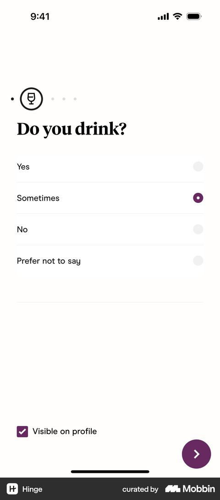
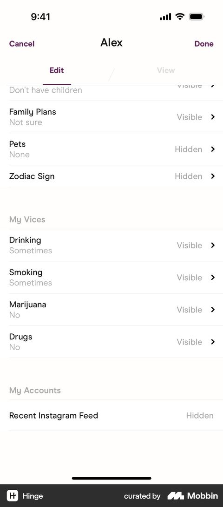
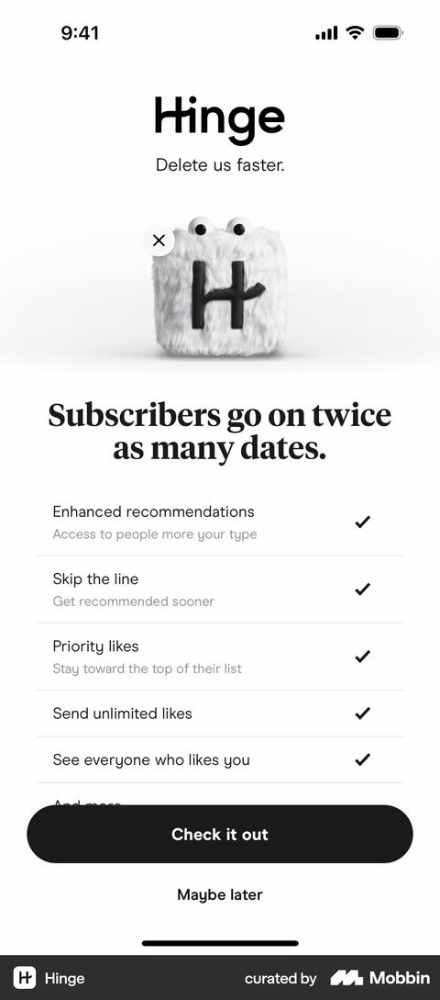
Bumble: темы на одном экране и анкета после ленты
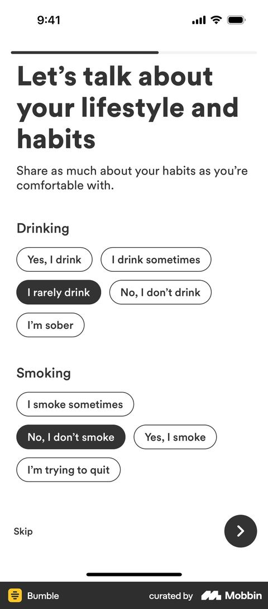
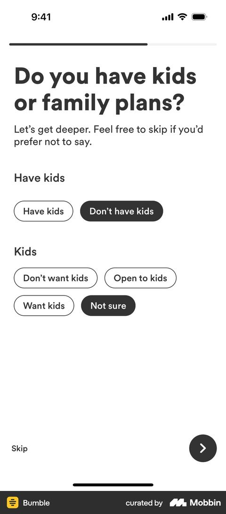
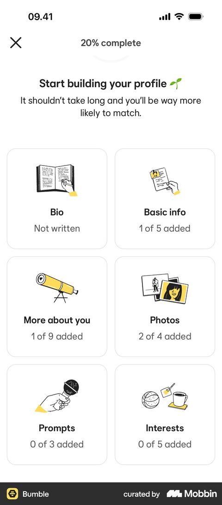
Tinder: четыре привычки одним экраном и скрытие от знакомых
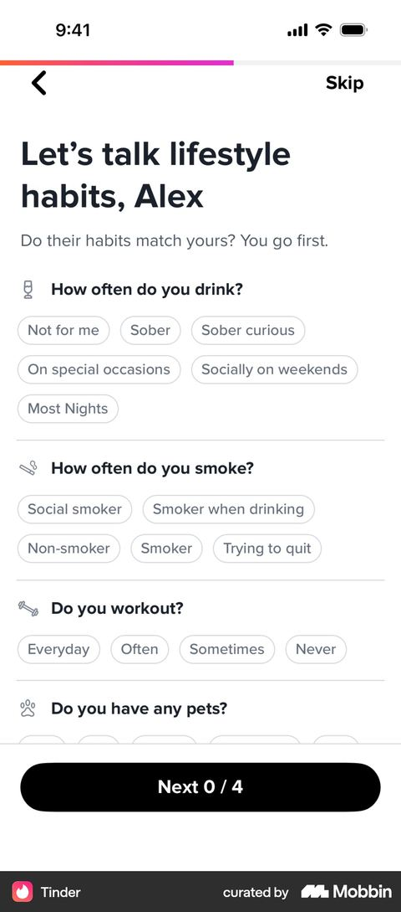
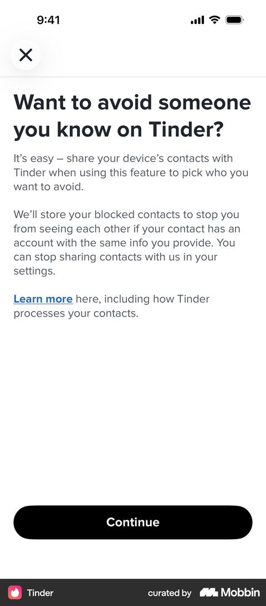
Badoo: «не скажу» как равный ответ
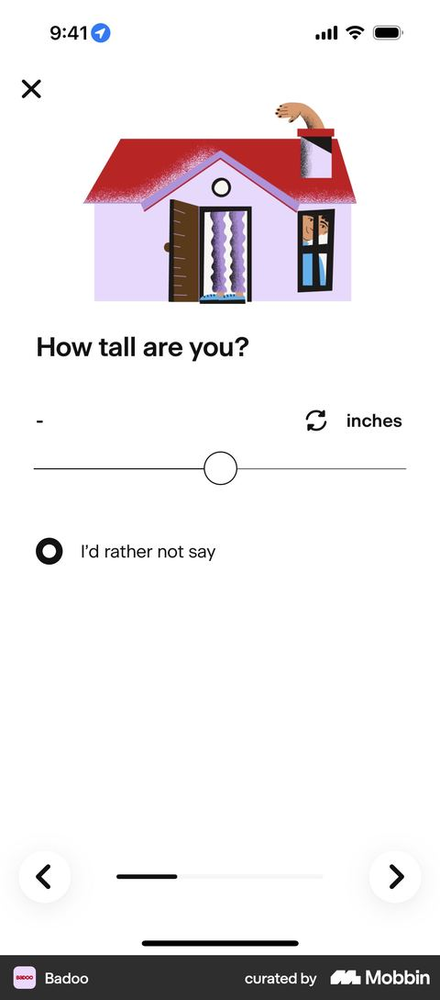
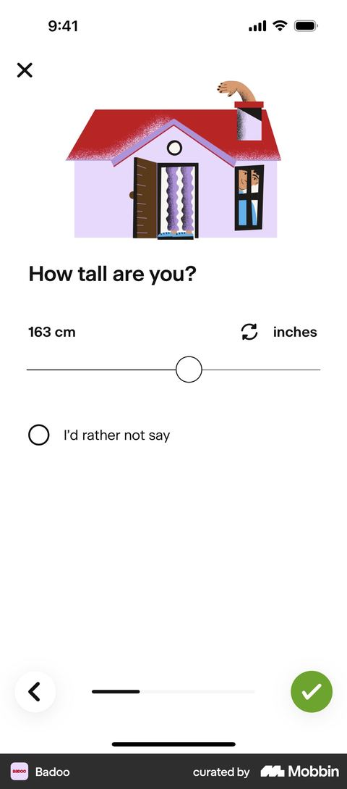
Feeld: полный экран подписки внутри онбординга
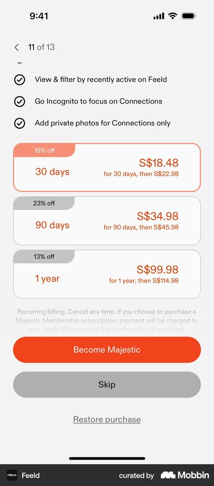
Российские сервисы
Пошаговых публичных разборов Twinby, VK Знакомств и Teamo за 2025–2026 нет, в Mobbin их тоже нет. Ниже только подтверждённое.
| Приложение | Что подтверждено | Подписка | Вывод для нас |
|---|---|---|---|
| Mamba | 11 вопросов анкеты, ни одного обязательного, «No answer» первым пунктом. Фильтр по параметру доступен, только если вы указали его о себе, иначе предлагают VIP факт: собственная запись экрана, iOS 4.46.1, 08.10.2026 | VIP контекстно: из фильтра, гейта, баннера; 1 490 / 2 990 / 6 990 ₽ с зачёркнутыми ценами | Прецедент взаимности на родном рынке |
| Twinby | Обязательный психотест при регистрации, итог — процент совместимости; на скриншотах App Store оси совместимости «Семья, Дети, Деньги, Мораль, Амбиции» факт: App Store, версия 2.4.0 от 31.08.2026 | С января 2024, главная функция — кому вы понравились; конверсия в оплату, по словам компании, выросла с 2,7% до 5% | Длинный тест несовместим с целью 90%, но «Дети» и «Семья» как оси совместимости подтверждают выбор тем |
| VK Знакомства | Вход через VK ID, имя, фото и возраст подтягиваются. Обязательны пол, возраст, радиус, цель. «Личное»: рост, образование, работа, семейное положение, дети, алкоголь, спорт. Рейтинг полноты: фото +5%, данные +5%, верификация +15% (T-Ж, 26.01.2026 факт) | Premium от 599 ₽ в месяц факт: RuStore, 04.2026 | Самый близкий аналог: сервис внутри большой экосистемы с предзаполнением из основного аккаунта. Набор «дети, алкоголь, спорт» совпадает с нашим |
| Teamo | 4 слайда о ценностях до регистрации; на скриншотах App Store карточки «Отношение к жизни 1/15» факт: App Store, 6.19.x, 09.2026 | Премиум: сообщения без взаимности, гости, расширенный подбор | Длинный тест — серьёзный сегмент, но тот же конфликт с CR |
Игры и квизы
Свежих (2025–2026) разборов дизайна Sims и Fallout найти не удалось. Старые данные применимы, потому что описывают поведение, а не интерфейс.
- В The Sims 4 за 2021 год игроки провели в редакторе персонажа 146 млн часов из ≈ 1,2 млрд (≈ 12%) (TheGamer по отчёту EA факт, по пересказу). Создание персонажа — самостоятельная ценность, а не налог перед игрой.
- В Fallout 4 характеристики персонажа распределяются через детскую книжку прямо в сцене пролога (Fallout Wiki факт).
- Кастомизация аватара повышает идентификацию с ним, а через неё мотивацию (JMIR 2019, N=259 факт).
- Илья Красинский (Telegram, антикейс, воркшоп факт): квиз не равен опроснику; каждый вопрос — выгода или налог; формулировки берутся из языка клиентов.
| Механика | Почему держит оценка | Как на нашем экране | Берём |
|---|---|---|---|
| Живое превью персонажа (Sims) | Сразу видно результат выбора | Карточка «Так вас увидят» на экране 5 собирает видимые ответы экранов 1–3 | Да |
| Ограниченный бюджет выбора (3 черты в Sims) | Ограничение делает выбор осмысленным | Отметки на экране 4 меняют порядок ленты, а не отсекают людей, поэтому лимит только добавлял решение | Нет |
| Мгновенная обратная связь | Связь «действие → результат» | Строка «Учтём в подборе» под ответом вместо отдельного экрана | Да |
| Диегетичность (книжка в Fallout) | Не ощущается как форма | Вопросы человеческим языком: «Как у вас с курением?» вместо «Вредные привычки» | Да |
| Обратимость | Снижает тревогу перед выбором | «Можно поменять в профиле» на чувствительных экранах | Да |
| Квиз ведёт к результату для человека | Человек видит, к чему идёт | Финал — экран «Анкета готова»: так вас увидят и кого покажем первыми | Да |
| Тип личности по итогам квиза | Любопытство | Выведенный тип бесполезен второй стороне | Нет |
Темы и вопросы анкеты
Польза для второй стороны
- Привычки. Графу проверяют до решения о знакомстве 92% женщин и 86% мужчин; 40% мужчин категорически против курящей партнёрши, 33% женщин считают курение мужчины поводом для отказа (опрос Mamba, 29.05.2026 факт; размер выборки не указан). Доля курящих в 2024 году: 18,6% по Минздраву, 25,5% по Росстату (T-Ж факт, по пересказу).
- Образ жизни. Для 59% он напрямую влияет на успех отношений, 73% ждут совпадения ритма жизни (Twinby и Healthis через «Сноб», 17.02.2026 факт; размер выборки не указан).
- Дети. Не собираются иметь детей 18% (2025) против 6% (2005) (ВЦИОМ через The Moscow Times факт, по пересказу). 56% считают семью семьёй только при наличии ребёнка («Вебер» через «Мел», январь 2024, N=1400 факт; онлайн-выборка, нерепрезентативна).
- Честность анкет. Серьёзные отношения ищут 72%; неверно указывали возраст 23%, цель 17% (Tiburon Research через AdIndex, 13.02.2025, N=1000 факт).
- Что спрашивают российские конкуренты. VK Знакомства — алкоголь, отношение к детям и спорт (T-Ж факт); Mamba — 11 параметров, включая курение, алкоголь, детей и жильё факт: запись экрана 08.10.2026.
- Международные данные. Для долгих отношений стоп-факторы действуют сильнее; человек отмечает в среднем 6 из 17 (Jonason et al. 2015, N>6500, через Psychology Today факт; 2015 год, используется как устойчивое поведение).
Цена ответа
- Чувствительные вопросы не повышают бросание анкеты (Emery 2023, Chen 2022 факт). Чувствительность бьёт по пропускам и по честности, а не по CR.
- Доход — лидер по неответам: 8,2% в GSS против <1% по прочей демографии (Jabkowski & Piekut 2024 факт, по аннотации).
- Доля «prefer not to say» по детям, привычкам или религии в приложениях знакомств публично не найдена.
Матрица «польза × цена»
| Тема | Польза для второй стороны | Цена ответа | Решение | Видимость по умолчанию |
|---|---|---|---|---|
| Курение | Очень высокая | Средняя | Брать | Видно, скрытие в один тап |
| Алкоголь | Средняя–высокая | Средняя | Брать с градациями | Видно |
| Ритм дня (утро или вечер) | Средняя–высокая: пары с похожим ритмом довольнее отношениями (Jocz et al. 2018 факт, 91 пара) | Низкая | Брать первым вопросом | Видно |
| Спорт и активность | Средняя (73% ждут совпадения ритма) | Низкая | Брать как разгон | Видно |
| Есть ли дети | Высокая | Средняя | Брать | Видно |
| Дети в будущем | Очень высокая (18% не планируют) | Средняя | Брать + «Пока не знаю» | Видно |
| С кем живу | Средняя | Высокая (безопасность) | Брать | Скрыто, только для подбора |
| Готовность к переезду | Средняя для серьёзных | Низкая | Брать | Видно |
| Питание | Низкая | Низкая | Не брать: шум | — |
| Сфера работы | Средняя | Длинный список | Не брать в первую сессию | — |
| Место работы и учёбы | Средняя | Ввод текста | Не брать: +1–3 п.п. отвала | — |
| Образование | Средняя (67% ценят) | Средняя | Отложить: статусный фильтр | — |
| Интересы | Повод написать | Низкая | Не брать: закрыты промптами до фрагмента | — |
| Рост | Средняя | Низкая | Не брать: внешность, близко к «о себе» | — |
| Доход | Высокая для части | Очень высокая | Отказаться | — |
| Религия, политика, здоровье, ориентация, этничность | Высокая для части | Очень высокая, спецкатегории ПД | Отказаться в первой сессии | — |
Правовые ограничения (кратко, не юридическое заключение)
- Специальные категории ПД (национальность, политика, религия, здоровье, интимная жизнь) обрабатываются только с письменного согласия (152-ФЗ ст. 10 факт). С 01.09.2025 согласие оформляется отдельно от оферты (Гарант факт).
- Курение и алкоголь формулируем как образ жизни, а не как здоровье оценка.
- Вариант «не могу иметь детей» не предлагаем: это сведения о здоровье оценка.
- Автоподстановку из истории покупок не делаем («покупали детские вещи → есть дети»): цель обработки другая (152-ФЗ ст. 5).
Бенчмарки и метод оценки CR
Что есть публично
Академические данные (лучшая методология):
- Emery et al. 2023: N = 3 378, ≈ 300 вопросов, бросили 17,23%. Риск постоянен по длине анкеты, чувствительность незначима, со смартфона бросают в 2,6 раза чаще. Отсюда ≈ 0,06 п.п. на вопрос у мотивированных и ≈ 0,15 п.п. с мобильным множителем оценка-расчёт.
- Chen et al. 2022: чаще всего бросают в начале анкеты и при смене темы; пропуск вопроса предвещает бросание факт.
- Hadler 2025: открытые вопросы повышают бросание факт, без цифр.
Данные вендоров:
- Typeform 2025: формы из 10 вопросов завершают на 28% реже, чем из 3 (через CrazyEgg факт, вторичный источник). Это лид-формы с низким намерением.
- Adapty, ноябрь 2025 факт, данные вендора, без выборок: убрали экран загрузки — +22% к пробным подпискам; потеря больше 20–30% на одном экране — красный флаг.
- Медиана длины онбординга 11 шагов (Lazyweb, июль 2026, 129 флоу факт).
- Знакомства: пошаговой доходимости онбординга не публикует никто. Ближайшее — вход в Mamba через Яндекс ID даёт +3% к конверсии регистрации относительно SMS (Яндекс Пэй, 2024 факт). Аналог предзаполнения из основного аккаунта.
- Индикатор прогресса: свежих A/B нет; быстрый в начале помогает, медленный вредит (Villar 2013 факт, используется как поведенческий эффект).
Надёжность. Ни один источник не сопоставим напрямую: это не знакомства, не Россия и не анкета внутри большого приложения. Поэтому уверенность в абсолютной CR низкая, в относительных выводах (что дороже, что дешевле) средняя оценка.
Метод
Отвал экрана d = база + поправки (п.п.); CR экрана = 100 − d; сквозная = произведение CR экранов
Три сценария: оптимистичный / базовый / пессимистичный
| Компонент | Опт. / база / пес., п.п. | Основание |
|---|---|---|
| База: экран с тапами, 1–2 решения | 0,5 / 1,0 / 1,5 | Между Emery (≈ 0,15 на вопрос с мобильным множителем) и Typeform. Пользователь уже залогинен и пришёл сам допущение |
| Первый экран фрагмента | +0,5 / 1,0 / 1,5 | Chen 2022: максимум бросаний в начале |
| Вход в новую чувствительную тему | +0,3 / 0,6 / 1,0 | Chen 2022: смена темы |
| Каждое решение сверх двух | +0,3 / 0,4 / 0,5 | оценка |
| Ввод текста | +1 / 2 / 3 | Hadler 2025; медиана отвала на поле формы 1,6–3,3% |
| Длинный список или поиск | +0,3 / 0,5 / 0,7 | оценка |
| Есть «Не хочу говорить» или «Пропустить» | −0,5 / 0,4 / 0,3 | Chen 2022: пропуск без легального выхода предвещает бросание |
| Превью «так вас увидят» | −0,3 / 0,15 / 0 | оценка |
| Экран без решения | +0,3 / 0,6 / 1,0 | Adapty: удаление экрана загрузки +22% |
Рядом с CR на каждом экране вторая метрика: доля содержательных ответов (не «пропустить» и не «не скажу»). Точной оценки не даём: данных о доле «prefer not to say» в знакомствах нет.
Варианты флоу по методу
| Флоу | Экраны (CR базового сценария) | Сквозная до подписки: опт. / база / пес. |
|---|---|---|
| A «Стоп-факторы», 3 | Дети и планы 97,8 → Образ жизни 99,0 → Дом и переезд 98,8 | 98,6 / 95,7 / 92,6 |
| B «Обмен», первая версия: 4 экрана | Образ жизни 98,0 → Дети и планы 98,8 → Дом и переезд 98,8 → Что важно + превью 99,5 | 98,4 / 95,2 / 91,5 |
| B «Обмен», итоговая версия: 5 экранов (выбран) | Привычки и ритм дня 97,6 → Дети и планы 98,8 → Дом и переезд 98,8 → В чём важно совпадать 99,4 → Анкета готова 99,55 | 97,9 / 94,3 / 90,1 |
| C «Сначала партнёр», 3 | 97,0 → 97,8 → 98,0 | 96,5 / 93,0 / 89,3 |
| D «Квиз с реакциями», 3 вопроса + 2 экрана-реакции | 98,0 → 99,4 → 98,8 → 99,4 → 98,8 | 98,0 / 94,5 / 90,7 |
| E «Широкий набор тем», 5 (с вводом текста и длинным списком) | 97,6 → 98,9 → 97,4 → 98,8 → 98,8 | 97,0 / 91,8 / 86,6 |
| B + обязательный голос | — | Метод неприменим: голос записывают ≈ 13%. Это обрыв воронки |
Вывод оценка: цель 90% держат A, B и D во всех сценариях. Разница A и B внутри погрешности метода, поэтому выбор сделан по качеству анкеты и силе экрана подписки. Итоговая версия B с вопросом о ритме дня и экраном «Анкета готова» держит цель с запасом 0,1 п.п. в пессимистичном сценарии: любое новое решение или поле ввода на экранах 1–5 опустит его ниже 90%, шестой экран анкеты невозможен.
Экран подписки
Что продаём: «Контроль и первый шаг»
Рамка честности. Всё, что человек рассказал о себе, работает на него бесплатно и полностью. Платным может быть только то, что сервис делает сверх обещания анкеты, и только если за это не платят другие пользователи.
- Цена воспринимается как нечестная, когда фирма пользуется положением, а не покрывает издержки (Kahneman, Knetsch & Thaler, 1986 факт). У нас опорная сделка задана самим флоу: «анкета в обмен на подбор». Продать подбор по анкете значит переписать сделку задним числом оценка.
- Платное преимущество над другими снижает справедливость и покупки, платное удобство нет факт: Wang et al., Information Systems Research, 2023.
- Когда бесплатное становится платным, падают воспринимаемая справедливость и отношение к компании факт: Cziehso, Schaefers & Kukar-Kinney, Journal of Business Research, 2019.
Бесплатно, и экран подписки говорит об этом в первых строках: подбор по всем ответам экранов 1–4 (совпадающие по отмеченным темам первыми), скрытие любого ответа, безопасность. Кого покажем первыми, человек видит ещё на экране 5.
Платно:
- Кому видна анкета. По умолчанию бесплатно «всем». С подпиской можно выбрать «только тем, кто мне понравился» или «всем, кроме знакомых по Авито». Выбор предлагают ещё на экране 5, в шторке «Изменить», платные режимы помечены «С подпиской» до цены; выбирать не обязательно.
- Первое слово. Сообщение вместе с «Нравится», его видят до того, как вы понравились друг другу. До 3 в день, чтобы не было потока непрошеных сообщений.
- Кому вы понравились. Покажем, как только это случится.
Почему это нужно уже в первой сессии. Анкету увидят сразу после «Не сейчас». 56% пользователей Mamba хотя бы раз встречали коллег в приложениях знакомств, 79% женщин и 52% мужчин такие совпадения игнорируют, чтобы избежать неловкости факт: опрос Mamba в пересказе MenToday, 17.09.2026. Приватность и сообщение до взаимности уже продают Mamba, Bumble, VK Знакомства, Teamo и Tinder факт; скрытия от контактов по маркетплейсу нет ни у кого оценка. На коридорных тестах готовность платить за скрытие анкеты от знакомых и от всех, кроме тех, кто понравился, предварительно подтвердилась факт: коридорные тесты, малая выборка; дальше её нужно подтверждать количественно.
Текст экрана в прототипе.
Верх экрана зависит от выбора на экране 5, поэтому у экрана два состояния.
- Выбран режим с подпиской: лиловая плашка «Вы выбрали: анкету увидят только те, кто вам понравился. Это работает с подпиской»; под заголовком строка «Подбор по вашим ответам остаётся бесплатным»; первый пункт про выбранный режим («Анкета только для тех, кто вам понравился. Включим сразу после оплаты»); под «Не сейчас» мелко «Без подписки анкету увидят все».
- Видят все: серая строка над заголовком «Анкета готова. Подбор по вашим ответам бесплатный»; первый пункт «Сами решаете, кому видна анкета. Сейчас её видят все. С подпиской можно показывать её только тем, кто вам понравился, или скрыть от знакомых по Авито».
- Общее: заголовок «Знакомьтесь на своих условиях»; пункты «Первое слово за вами» (до 3 сообщений в день) и «Кому вы понравились»; тарифы неделя 299 ₽ / месяц 599 ₽ (выделен) / 3 месяца 1 190 ₽.
- Кнопка: «Подключить за 599 ₽ в месяц». Отказ: «Не сейчас», ведёт в ленту, где совпадающие по отмеченным темам уже стоят первыми.
- Мелкий текст: подписка продлевается автоматически, пока вы её не отключите, отключить можно в профиле в любой момент, за день до списания придёт напоминание. Оплата через Авито Кошелёк или картой.
Рассмотренные варианты
| Вариант | Решение | Почему |
|---|---|---|
| Контроль и приватность + первое сообщение | Выбран | Ядро обещания анкеты не трогаем; ценность видна в первой сессии; спрос на приватность в РФ |
| Строгие фильтры за деньги: «только те, кто совпадает по отмеченным пунктам» | Рассмотрен и отклонён | Продаёт ядро обещания экрана 4: «учтём в подборе» превращается в «учтём за деньги». На старте сервиса строгий фильтр по трём пунктам даёт почти пустую ленту, и платящий получает меньше бесплатного оценка |
| Параметры сверх анкеты (рост, образование, вера) с правилом взаимности | Запасной | Отраслевой стандарт (Hinge, Mamba, Bumble); берём, если количественная проверка не подтвердит готовность платить за приватность |
| Скорость и видимость (приоритет показа) | Отклонён | За это платят бесплатные пользователи своей видимостью |
| Подборка дня с объяснением совпадения | Отклонён | Мала на старте; объяснение совпадения лучше отдать бесплатно |
| Не продавать в первой сессии, пробный период | Отклонён | Не выполняет требование задания; пробного периода нет: либо бесплатное ядро, либо платная подписка |
Платные функции и тарифы конкурентов, 2025–2026
| Сервис | Что продаёт | Периоды и цены | Как показана скидка |
|---|---|---|---|
| Mamba VIP | Кому вы понравились, чат до взаимности, гости, инкогнито, расширенный поиск | 7 дней 1 490 ₽ / 30 дней 2 990 ₽ / 90 дней 6 990 ₽ факт: запись экрана, 08.10.2026 | Зачёркнутые цены, «You save 53% / 61%» |
| VK Знакомства Premium | Расширенные фильтры, скрыть возраст и расстояние, больше отметок | 1 мес 599 ₽ / 3 мес 999 ₽ / 6 мес 1 490 ₽ (T-Ж факт) | Не найдено |
| Twinby | Кому вы понравились, отмена решения | Неделя 539 ₽ / месяц 895 ₽ / 3 мес 1 690 ₽ факт: App Store, 2.4.0 | Не найдено |
| Teamo Премиум | Сообщения без взаимности, гости, расширенный подбор | 7 дней 349 ₽ / 30 дней 899 ₽ / 90 дней 1 290 ₽ факт: App Store, 6.19.7 | Не найдено |
| Hinge+ / HingeX | Расширенные предпочтения, все отметки сразу; приоритет показа | Неделя / месяц / 3 / 6 месяцев, выделены 3 месяца факт: Mobbin | «Save 53% / 69%», цена за неделю |
| Bumble Premium | Кому вы понравились, расширенные фильтры, «видят только те, кого отметил я» | Неделя / месяц / 3 месяца факт: Mobbin | «Save 51%» |
| Tinder Gold | Кому вы понравились | Неделя / месяц / 6 месяцев факт: Mobbin | «Save 51% / 75%» |
Наши тарифы: допущение для прототипа
| Неделя | Месяц (выделен) | 3 месяца |
|---|---|---|
| 299 ₽ | 599 ₽ (≈ 139 ₽ в неделю) | 1 190 ₽ (≈ 397 ₽ в месяц) |
- Месяц 599 ₽ — ровно VK Знакомства, ниже Twinby (895 ₽) и Teamo (899 ₽) оценка.
- Неделя 299 ₽ как недорогая проба и якорь: месяц выглядит вдвое выгоднее без зачёркнутых цен. Недельные подписки дают почти половину выручки в приложениях, но 65% из них заканчиваются в первые 30 дней (Adapty 2025 факт, по пересказу); поэтому неделю не выделяем.
- 3 месяца 1 190 ₽ для настроенных серьёзно: у Hinge и Coffee Meets Bagel по умолчанию выделены 3 месяца факт: Mobbin. Ниже порога 1 200 ₽.
- Без пробного периода, зачёркнутых цен, таймеров и второго предложения после отказа. На старте сервиса доверие дороже.
- Автопродление. По 376-ФЗ (в силе с 01.03.2026) после отказа от карты списывать периодические платежи нельзя, отказ принимается в электронной форме факт. Напоминание за день до списания закон не требует, добавляем ради доверия оценка.
- Оплата. Карты РФ в App Store и Google Play не принимаются факт, поэтому оплата внутри приложения Авито (кошелёк или карта) допущение.
Данные о конверсии экрана подписки
- Экран подписки в онбординге конвертирует просмотр в пробную подписку или покупку: 9,07% у одностраничного, 12,41% у многостраничного (Superwall, 2026, 40+ млн показов факт; все категории, не знакомства).
- Мягкий экран конвертирует просмотр в оплату почти на 50% лучше жёсткого (Adapty 2026 факт); жёсткий даёт 10,7% против 2,1% в расчёте на установку (RevenueCat 2026 факт). Знаменатели разные, противоречия нет.
- Аудитория серьёзных отношений платит больше: выручка на платящего у Hinge $33,11 против $17,90 у Tinder (Match Group Q2 2026 факт).
- Рынок РФ: 6,2 млрд ₽ в 2025 году (+25%), на VK Знакомства, Mamba и Twinby приходится 75% («Коммерсантъ» факт). Доля платящих в РФ не найдена.
- Для CR задания проход экрана подписки считается 100% по построению; конверсию в оплату точной цифрой не даём.
Качество заполнения
| Механика | Данные об эффекте | Где видно | На нашем экране | Берём |
|---|---|---|---|---|
| «Ответить и скрыть» | Эффекта не публиковали | Hinge «Visible on profile», включено по умолчанию | Переключатель «Видно в анкете» на блоке; для «с кем живу» выключен; «Не хочу говорить» выключает его сам | Да |
| Взаимность | Эффекта не публиковали | Bumble, Mamba | На экране 4 отметить можно только то, на что ответили сами; неотвеченное серым с «Ответить» | Да, ядро флоу |
| Превью «как вас видят» | Данных нет | Редакторы профиля Hinge и Bumble | Карточка «Так вас увидят» на экране 5 | Да |
| Лимит выбора | Эффекта не публиковали | Bumble: до 5 интересов (GDI факт) | На экране 4 лимита нет: отметки меняют порядок ленты, а не фильтруют её | Нет |
| Без предвыбранных ответов | Предвыбор сдвигает выбор на 19–28 п.п. (Netspar, N=1076 факт, по аннотации) | — | Ничего не предвыбрано | Да |
| «Не хочу говорить» вместо «Пропустить» | Выбирают редко; эффект на бросание не доказан | Hinge, Mamba | Последний вариант в ритме дня, курении, алкоголе и обоих вопросах о детях; сам скрывает ответ | Да |
| Объяснение пользы вопроса | 63% пользователей Hinge не знают, что писать в профиле (Hinge, 15.01.2025 факт) | Почти ни у кого | Подзаголовок «зачем» на каждом экране | Да |
| Видимое пустое поле | Данных нет | — | В первой сессии пустое поле стыдит | Нет |
| Индикатор полноты в процентах | Данных нет | Mamba | Превью показывает полноту честнее | Нет |
| «Заполненные показываем чаще» | Данных нет | — | Стимул отвечать наугад | Нет |
Голос и видео
- Hinge: голосовые промпты до 30 секунд с 2021 года, видео с 2022-го; в онбординге запись необязательна факт: Mobbin. Bumble: аудио и видео с 2022 года. VK Знакомства: видео в анкете; голосовые в чатах только после взаимности (T-Ж факт).
- Эффект известен только по заявлениям Hinge, методология не раскрыта: голосовой промпт даёт вдвое больше взаимных отметок (Good Morning America, 13.02.2022 факт); голос записали ≈ 13% новых пользователей факт, по пересказу.
- Решение: во флоу не включаем. Обязательная запись обрывает воронку, необязательная — лишний экран, запрос микрофона и неловкость записи на людях оценка. В прототипе голос показан как необязательное состояние экрана 5: неактивный блок «Голосовой ответ · скоро».
Гипотезы
Формула: «если сделаем X, пользователь сможет Y, что приведёт к Z». ICE — способ упорядочить гипотезы, а не измерение оценка.
| # | Гипотеза | Метрика | Контр-метрика | ICE |
|---|---|---|---|---|
| H3 | Если каждый вопрос объясняет выгоду («подберём людей с похожими взглядами на детей»), человек увидит смысл ответа → выше доля ответов | Доля ответов против контроля | Время на экране | 420 |
| H1 | Если развести ответ и видимость, человек честно ответит на чувствительное, не раскрываясь → выше доля содержательных ответов при той же CR | Доля содержательных ответов на стоп-факторах | Доля скрытых среди ответивших | 392 |
| H9 | Если объединить ритм дня и 3 привычки на одном экране, → меньше экранов при той же полноте | Время на фрагмент, CR | Доля частично заполненных блоков | 378 |
| H7 | Если экран подписки мягкий с «Не сейчас», человек дойдёт до ленты → нет удара по возврату на следующий день и по числу анкет на витрине | Доля дошедших до ленты, D1 | Выручка на пользователя | 324 |
| H10 | Если дети и планы на одном экране с условной веткой, человек не ответит на лишнее → выше CR | Время на экране | Доля «пока не знаю» | 315 |
| H11 | Если формулировки нейтральные и с градациями («иногда», «бросаю»), → меньше «не скажу» на привычках | Доля «не скажу» | — | 300 |
| H6 | Если экран 5 показывает, кого покажем первыми, а экран подписки подтверждает, что подбор по ответам бесплатный, и продаёт только сверх обещанного, человек не почувствует обмана → выше просмотр → оплата, чем у экрана со строгим фильтром | Просмотр → оплата; ответ на коридорном тесте «у меня что-то забрали?» | Отмены автопродления, D7 | 280 |
| H4 | Если на экране 4 человек отмечает темы, в которых ему важно совпадать, он скажет, кого ищет, без отдельного допроса → выше качество подбора | Доля отметивших хотя бы 1 пункт | Доля пустых лент | 240 |
| H12 | Если «с кем живу» скрыто по умолчанию, человек ответит без риска для безопасности → выше доля ответов | Доля ответов на блок | Доля тех, кто сам открыл видимость | 240 |
| H5 | Если учитывать пункт можно, только ответив на него о себе, → выше доля ответов на экранах 1–3 | Доля ответов с правилом против без | Ответы наугад (правки через неделю) | 180 |
| H2 | Если на стоп-факторах вместо «Пропустить» стоит «Не хочу говорить», отказ станет осознанным → CR не ниже, пустые ответы различимы | CR экрана, доля «не скажу» | Жалобы «анкета не соответствует» | 180 |
| H8 | Если экран 5 «Анкета готова» показывает собранную анкету и кого покажем первыми, а выбор видимости не обязателен, человек увидит результат вложения и придёт к подписке, понимая, что бесплатно, а что платно → CR экрана 5 не ниже 99%, выше просмотр → «Подключить» | CR экрана 5, доля открывших «Изменить» | Возвраты на экран 4, обращения «я не знал, что это платно» | 120 |
Отклонены: социальное доказательство «12 человек рядом совпадают» без реальных данных (это обман) и обязательный голос (обрыв воронки).
Флоу «Обмен»: экраны
| Экран | Содержание | Обязательность | Видимость | CR, база (диапазон) |
|---|---|---|---|---|
| 1 Образ жизни | «Расскажите о своих привычках»: ритм дня, спорт, курение, алкоголь. Подзаголовок: «Подберём людей с похожими привычками. Любой ответ можно скрыть» | Необязательный, «Не хочу говорить» в ритме дня, курении и алкоголе | Видно, переключатель на блоке; «Не хочу говорить» скрывает ответ сам | 97,6 (96,3–98,9) |
| 2 Дети и планы | Есть ли дети (с вариантами «живут со мной» и «живут отдельно»); «Дети в будущем» с «Пока не знаю» | Необязательный, «Не хочу говорить» в обоих вопросах | Видно; «Не хочу говорить» скрывает ответ сам | 98,8 (97,8–99,7) |
| 3 Дом и переезд | С кем живу, готовность к переезду | Необязательный | «С кем живу» скрыто, только для подбора | 98,8 (97,8–99,7) |
| 4 В чём вам важно совпадать | Шесть тем, отметить сколько угодно; людей, совпадающих в отмеченных темах, покажем раньше. Отметить можно только то, на что ответили сами; неотвеченное серым с «Ответить» | Необязательный | Отметки никому не видны | 99,4 (98,8–99,8) |
| 5 Анкета готова | «Так вас увидят» (карточка из видимых ответов), «Кого покажем первыми» (фраза из отмеченных тем), «Кто увидит анкету: сейчас её увидят все, в том числе знакомые по Авито · Изменить» | Ничего не требует, «Далее» активна сразу | Режим «Всем»; платные режимы включаются после оплаты | 99,55 (99,0–99,8) |
| Подписка | «Контроль и первый шаг»; верх экрана по выбору на экране 5; бесплатный подбор в первых строках; «Не сейчас» | — | — | Проход ≈ 100% |
| Сквозная до экрана подписки | 94,3 (90,1–97,9) |
- Плюсы: начинается с лёгкой темы; закрывает «кого ищу» без повтора цели; экран подписки вырастает из ответов; двусторонний подбор.
- Минусы и риски: запас CR в пессимистичном сценарии всего 0,1 п.п.; экраны 4 и 5 сложнее в сборке; формулировки предпочтений могут звучать как отсев людей; эффект взаимности никем не измерен. Это проверяем на коридорных тестах.
- Когда переключиться на «Стоп-факторы»: если экран 4 окажется непонятным или «оценочным» для большинства участников тестов.
Почему появился экран 5 «Анкета готова»
В первой версии после экрана 4 сразу шёл экран подписки, и это давало три проблемы: анкета обрывалась без финала; строка «это бесплатно» на подписке не связывалась с ответами; разговор менялся с «я и мои предпочтения» на «контроль и приватность» без перехода. Экран 5 работает мостом: человек видит, как его увидят другие и кого ему покажем первыми, а последняя строка продолжает разговор о нём самом: кто увидит анкету. Платные режимы помечены до цены, выбор не обязателен, поэтому экран почти не стоит CR оценка.
| Вариант финала | Сквозная CR, пес. оценка | Решение и причина |
|---|---|---|
| Экран 5 «Анкета готова», выбор видимости в шторке «Изменить» | 90,6 | Выбран. Снимает все три проблемы в естественном порядке: «рассказал о себе» → «вот результат» → «кто это увидит» → «что даёт подписка». Не меняет утверждённое предложение подписки |
| Тот же экран 5, выбор видимости вопросом прямо на экране | 89,5 | Отклонён: ниже цели 90%; платные варианты внутри анкеты выглядят ловушкой |
| Экран 5 с обязательным выбором («Далее» неактивна до выбора) | 89,2 | Отклонён: ниже цели 90%; экран подписки и так видят все дошедшие |
| Мост без нового экрана: «Завершить анкету» на экране 4 и блок «Анкета готова» на подписке | 91,5 | Отклонён: финал живёт на экране с ценой, проблемы сняты лишь частично. Был запасным вариантом |
| Продавать ещё темы для совпадения | 91,5 | Отклонён: граница «бесплатно / платно» по темам выглядит произвольной и пересматривает ценность подписки |
| Продавать первое слово по общему | 91,5 | Отклонён: не снимает обрыв анкеты; сообщения до взаимности бьют по второй стороне |
CR в таблице посчитаны до добавления вопроса о ритме дня; с ним выбранный вариант даёт 90,1% в пессимистичном сценарии.
План проверки
Синтетический прогон (быстрый тест, не доказательство)
Панель из 30–40 персон: пол × возраст (25–34 / 35–45) × есть ли дети × отношение к приватности × опыт знакомств в приложениях, плюс несколько «трудных» персон (есть ребёнок после развода; бросаю курить; живу с родителями; не хочу детей). На каждом экране персона отвечает, что сделает, что скроет и почему, что непонятно. Ограничения: модели угодливы, не платят временем и неловкостью, абсолютную CR не оценивают (NN/g факт). Если формулировка путает модель, она, вероятно, путает и часть людей; обратное неверно допущение.
Коридорные тесты на 3–5 людях
- Кто: 25–45 лет, не в отношениях, готовы к долгим отношениям; не близкие друзья автора.
- Сценарий: «Вы решили попробовать знакомства в приложении, хотите серьёзных отношений, анкету "о себе" уже заполнили. Пройдите дальше так, как сделали бы для себя», с размышлением вслух.
- На экране подписки: 5-секундный тест «что даёт подписка, сколько стоит, что будет при отказе»; вопрос «что вы получите, если нажмёте "Не сейчас"?» (провал, если ответ «ничего»); два экрана рядом, выбранный и со строгим фильтром: «за какой заплатили бы» и «глядя на какой, вы чувствуете, что у вас что-то забрали?»; насколько важно, чтобы анкету не увидели коллеги и соседи (1–5).
- Что наблюдаем: паузы дольше 5 секунд, «не скажу», переключатели видимости, возвраты, реакцию на экран 4 и на строку «Кто увидит анкету» на экране 5.
- Что тест может и не может. Может найти места, где спотыкаются: 5 человек находят большую часть проблем юзабилити (NN/g факт). Не может измерить CR: 8 из 8 дошедших дают нижнюю границу 95% доверительного интервала ≈ 70% (MeasuringU факт).
- Как результаты попадут в прототип: правятся тексты и состояния экранов, шестой экран анкеты не добавляется. Если экран 4 провалится у большинства, переключаемся на флоу «Стоп-факторы».
Ограничения и что не удалось
- Пошаговой доходимости онбордингов знакомств в открытых источниках нет; CR — оценка по смежным данным.
- Российских сервисов нет в Mobbin; по ним только подтверждённое в магазинах приложений и статьях.
- Mobbin не показывает дату съёмки; свежесть экранов оценена по признакам интерфейса.
- Часть страниц не открывалась; такие цифры помечены «по пересказу» или «по аннотации».
- Готовность платить за скрытие анкеты от знакомых и от всех, кроме тех, кто понравился, на коридорных тестах подтвердилась только предварительно: на малой выборке это не измерение. Следующий шаг — количественная проверка, например конверсия экрана подписки в «Подключить» по двум состояниям экрана и доля выбравших платный режим на экране 5.
- Техническая реализуемость скрытия «от тех, с кем общались на Авито» и оплаты через кошелёк Авито не проверялась допущение.